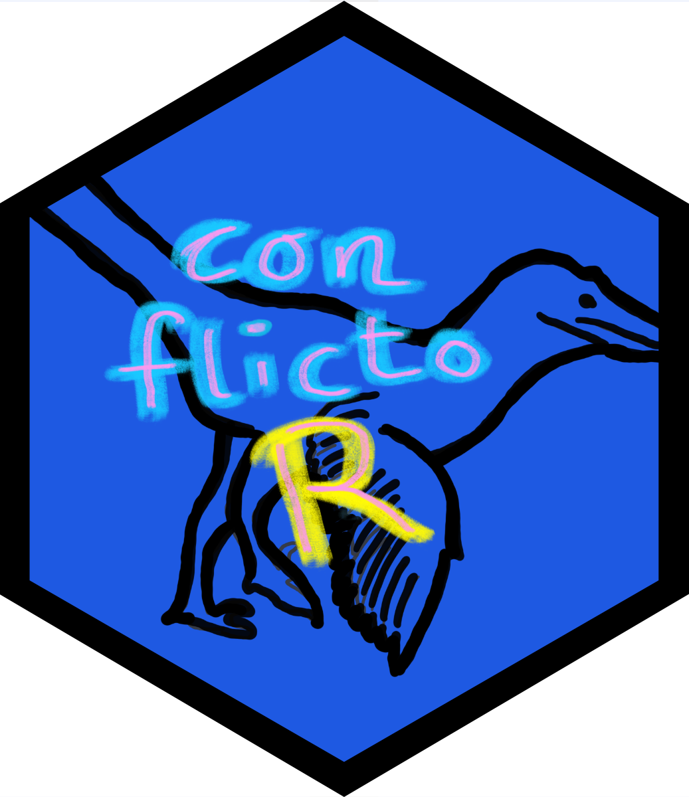

Create an API Request for the UCDP Database
cl_build_request.RdConstructs an API request to the Uppsala Conflict Data Program (UCDP) API using specified parameters, including the resource, API version, page size, and page number(s). This function allows for both single and multiple page requests.
Arguments
- resource
A character string specifying the resource path for the API (e.g., "conflict", "actor").
- version
A character string indicating the version of the API to use (e.g., "v1", "v2").
- pagesize
An integer specifying the number of records per page. Must be a positive number.
- page
An integer or vector of integers indicating the page number(s) to request. If a single number is provided, the function returns a single request; if a vector of numbers is provided, a list of requests is returned.
- params
A list of validated params returned by
cl_check_params.